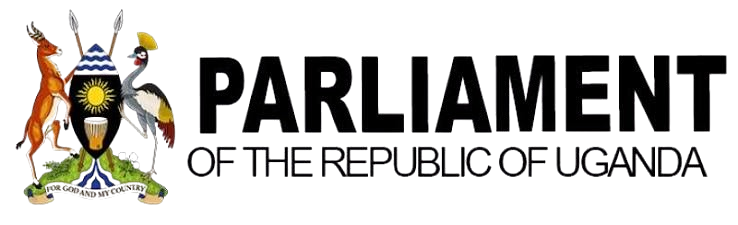
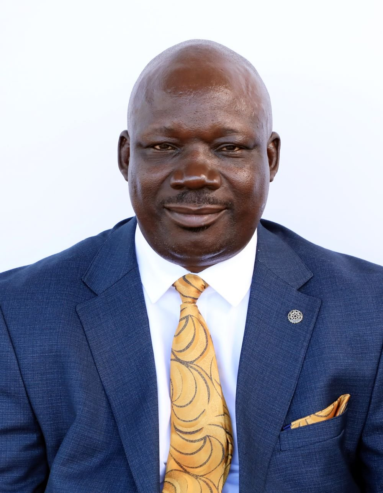
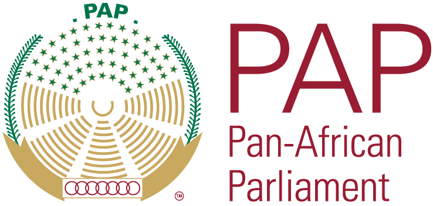

Member, Pan-African Parliament
Representing the Republic of Uganda

KILAK NORTH COUNTY · AMURU DISTRICT
Member of Parliament, Uganda & Member of the Pan-African Parliament
Committed to representation, accountable leadership, community development and an Africa strengthened through regional cooperation.


LEADERSHIP & PUBLIC SERVICE
From finance and civil society leadership to national and continental representation, Hon. Akol’s experience spans public accountability, development and human rights.
Representing the Republic of Uganda
Committee on Audit & Public Accounts · Pan-African Parliament
Parliamentary Forum on Food Security, Population & Development
Kilak North County · Amuru District
Acholi Parliamentary Group (APG)
Finance, Planning & Economic Development
Gulu NGO Forum
Gulu NGO Board
Charity for Peace Foundation
Action for Children in Conflict – UK
Gulu Independent Hospital
OFFICIAL CONTACT
For constituency matters, official engagements and correspondence, use the direct contact channels below.